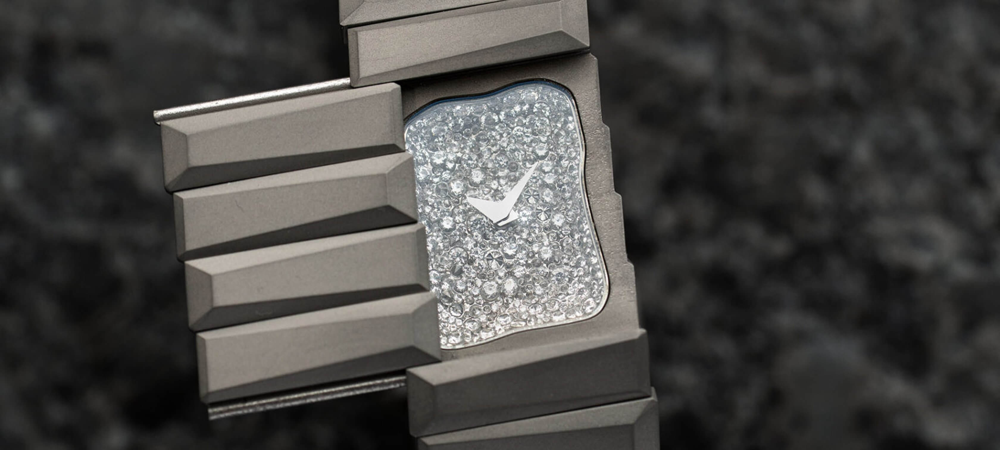
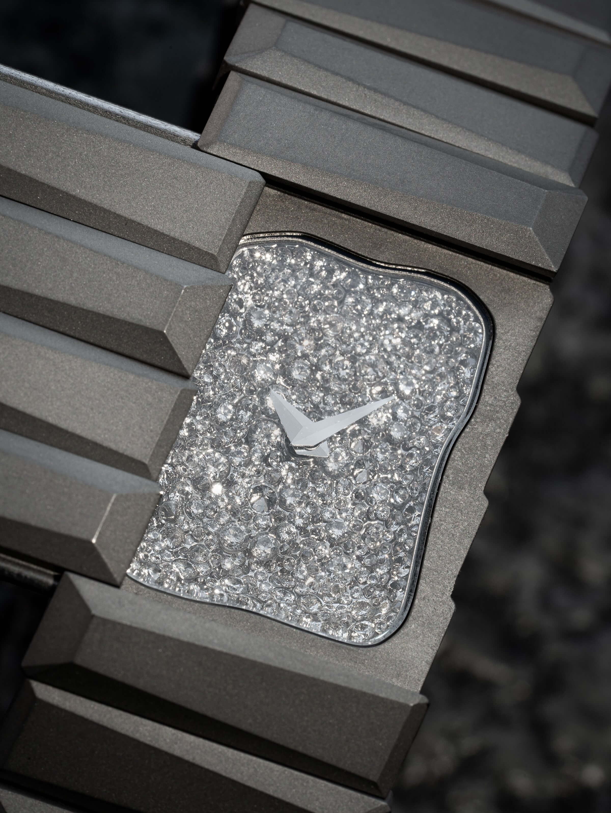
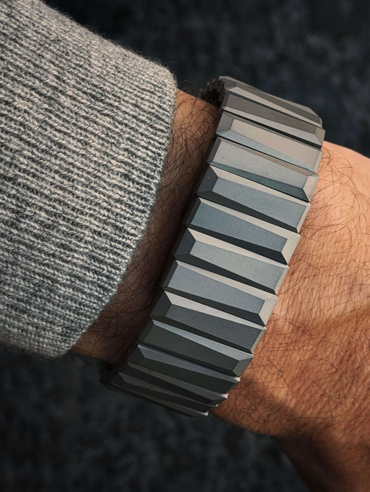
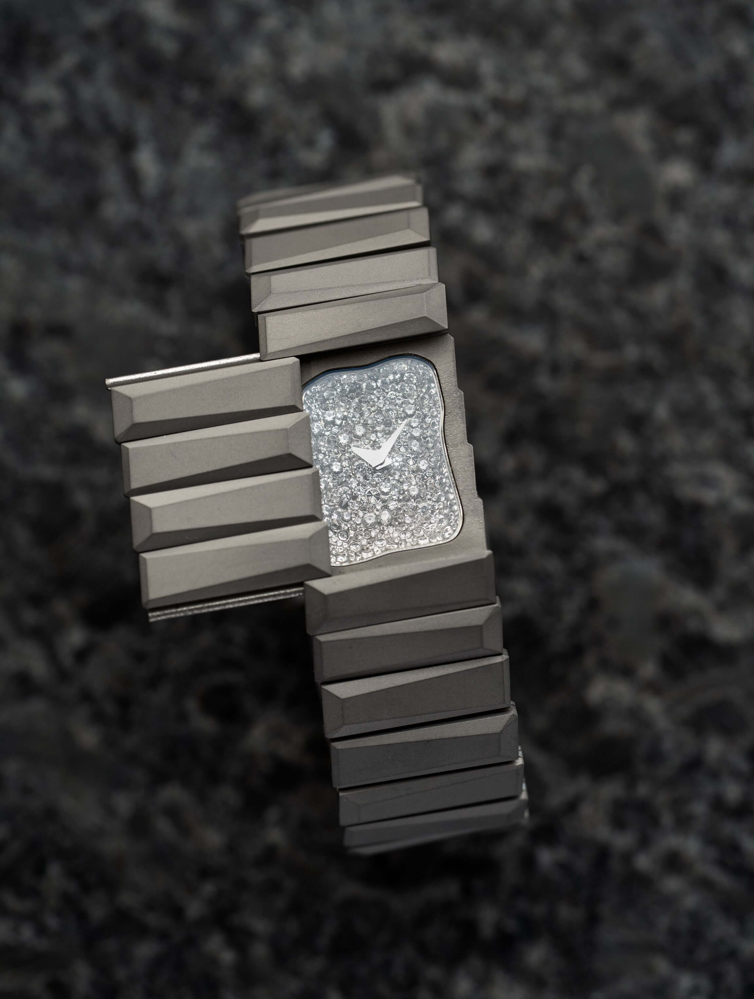
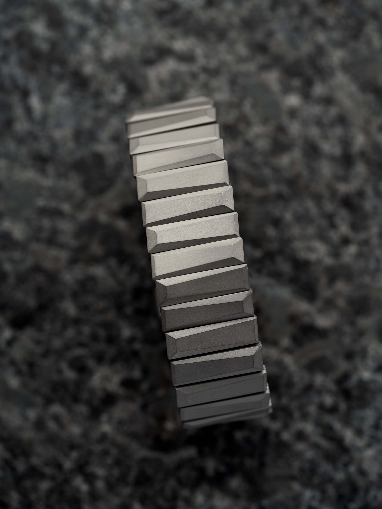

In old Japan a lord who wanted to move through the country without the country noticing would leave the crest and the retinue at home and travel as a nobody. The word for that is oshinobi: high rank, but deliberately disguised. Nothing about the outside tells you what is underneath.
Nenad Pantelic • October 20, 2026

Toledano & Chan is the collaboration between artist and collector Phil Toledano and watch designer Alfred Chan. Their watches lean hard on brutalist architecture, and the B/1 with super chunky asymmetric links is probably the one you already know.
The Oshinobi takes those same links and turns them into something stranger. The name comes from a Japanese term for a person of high rank who travels incognito, and that tells you how the thing works. From the top it looks like a titanium bracelet and nothing more. Slide a cover sideways and you find a concave shaped dial set with two carats of snow-set diamonds. Even the crown is hidden, tucked under the case at 12 o'clock.
I love how this watch plays with the idea of a hidden gem. Usually that's a figure of speech for some underrated microbrand. Here it's the literal brief.
The inspiration is a geode. On the outside it looks like any other rock. Crack it open and it's full of crystals. That's the Oshinobi: a rough, sandblasted shell on the outside and a sparkly, irregular little cave on the inside. The snow setting means the diamonds are different sizes, which helps sell the "cracked rock full of crystals" look.
Phil also has a practical angle. A lot of people in the watch community worry about walking around big cities with something flashy on the wrist. His answer is a diamond watch nobody can see, or as he put it to Hodinkee, "horological lingerie." I'll admit I laughed, but it's a fair point.

This is the part that got my strap-maniac brain going. There isn't a watch head with a bracelet attached. The whole case is built from B/1-style asymmetric links in grade 5 titanium, sandblasted all over. Look at it straight from above and you would swear it is a bracelet with no watch at all. Only from the side do you notice the extra depth that holds the movement and dial.
The links are the same shape as on the B/1, but every other one is rotated. That pulls a kind of symmetry out of an asymmetric design, and as a side effect both edges of the bracelet end up jagged, almost like a saw blade. The same edge carries onto the plate around the dial when the cover is open. From the side it reads like armor plating off some sci-fi battleship. I mean that as a compliment.
A few numbers for the strap nerds:
| Brand | Toledano & Chan |
| Width | 21mm, with no taper from end to end |
| Material | Grade 5 titanium |
| Finishing | Sandblasted | Clasp | Hidden butterfly clasp |
| Lume | None |
| Lug to lug | Lol 😂 |
| Water resistance | Not stated |
No taper is the right call here. A taper would make it look like a watch bracelet, and the whole point is that it doesn't.

A bracelet like this is hard to build and hard to produce. Every link is asymmetric and alternates direction, the links have to articulate properly on a wrist, the clasp has to vanish, and on top of that a sliding cover has to run smoothly through the middle of it all. Titanium doesn't make any of this easier.
I bet the suppliers pushed back more than once with "easier" solutions. Kudos to Phil and Alfred for pushing until they were happy instead of settling for something subpar. You can see that stubbornness in the finished piece.


The Oshinobi is a beautiful object, and to me it sits closer to an art piece than a horological product. You buy it for the case, the links and the secret, not for the spec sheet.
That said, the movement did get an upgrade. Earlier Toledano & Chan models used a Sellita SW100, which drew criticism at their price point. The Oshinobi switches to a hand-wound calibre from Le Temps Manufactures, picked mainly because it fits the small 21mm case better. Nice to have, but I don't think anyone buys this one for the movement.
The watch you see here is a prototype with "TIME FOR ART" engraved on the caseback. It goes under the hammer at the TimeForArt charity auction, held with Phillips on December 5, 2026. A limited production run follows in 2027, with pricing still to be announced.
Most new releases make me nod and move on. The Oshinobi made me look twice, then go back for a third look. It takes the B/1 links I already liked, flips every other one, and turns a bracelet into a hiding place for two carats of diamonds. Is it practical? Not really. Is it a watch first? Debatable. Is it one of the most interesting bracelets of the year? Absolutely.